🚌 Viaje a Trujillo
Ruta del viaje de estudios iniciando desde el Terminal Tetsur Jaén, recorriendo lugares históricos, culturales y turísticos de Trujillo.
🚌 Terminal Tetsur Jaén
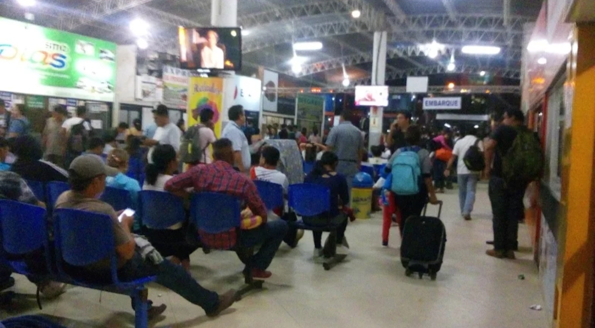
Aquí nos reunimos para comenzar nuestro viaje a Trujillo. Estábamos muy emocionados por todo lo que íbamos a conocer.
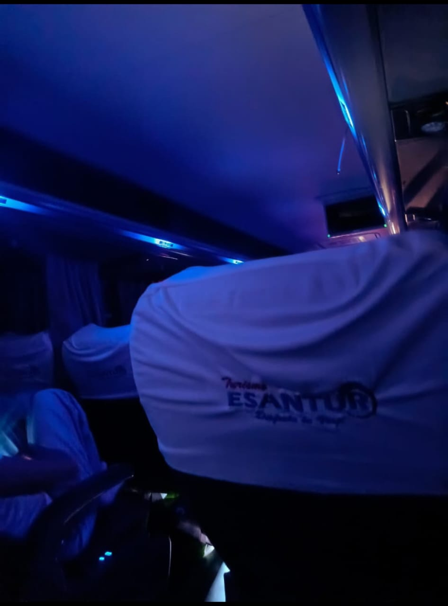
Desde aquí partimos de Jaén rumbo a Trujillo. Fue el inicio de una experiencia que compartimos con mis compañeros.
🏫 Instituto de Educación Superior Público "Trujillo"

En este instituto nos recibieron para poder tomar nuestro desayuno antes de continuar con el recorrido.

Nuestro desayuno fue un pan relleno con tortilla de huevo y hotdog, una botella de avena y otra de jugo de papaya. Después de desayunar, continuamos con nuestro recorrido.
🏛 Museo Santiago Uceda Castillo
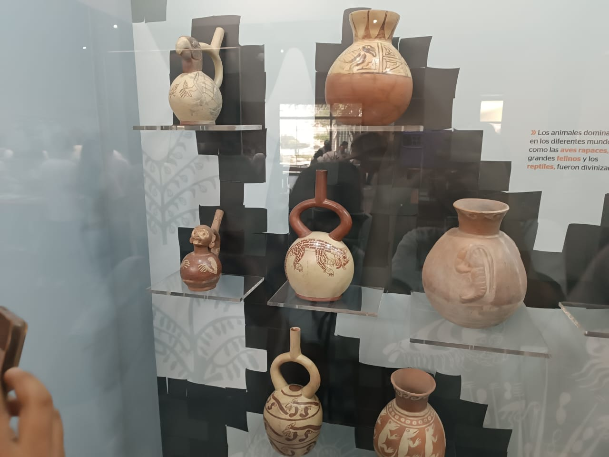
En este museo pude conocer más sobre la historia y la arqueología de Trujillo mientras observaba las piezas que se encontraban en el lugar.

Me llamó la atención conocer parte de la historia de las culturas antiguas y aprender cosas nuevas durante nuestra visita.
🌙 Huaca de la Luna
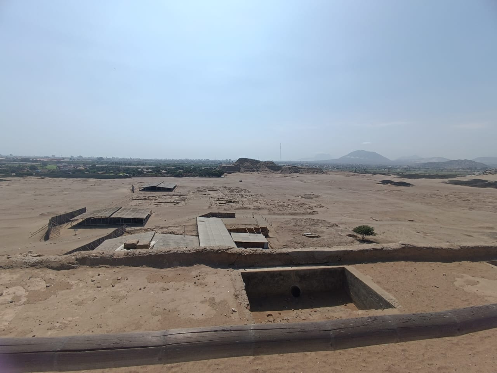
Al visitar la Huaca de la Luna pude apreciar de cerca parte del legado de la cultura Moche y conocer más sobre su historia.
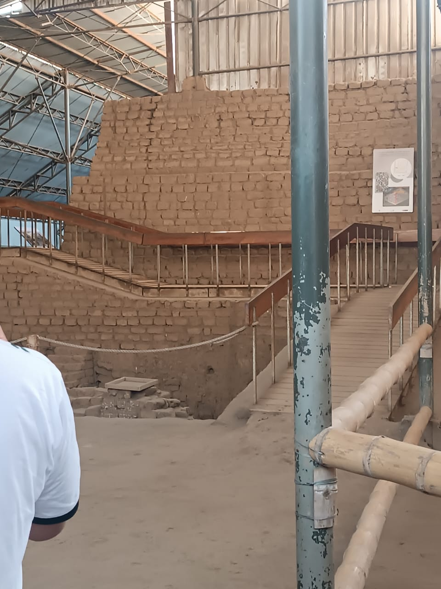
Lo que más me llamó la atención fueron sus murales y relieves, porque pude observar detalles que había visto antes solo en imágenes.
🏨 Hotel

Aquí nos hospedamos durante el viaje y pudimos descansar después de todas las actividades que realizamos durante el día.

Fue un momento para descansar y compartir con mis compañeros antes de continuar con las actividades del viaje.
⛪ Catedral Basílica de Santa María

Al conocer la Catedral Basílica de Santa María pude apreciar su arquitectura y conocer uno de los lugares religiosos más importantes de Trujillo.

Me gustó observar sus detalles y tomar algunas fotografías para recordar nuestra visita a este lugar.
🏛 Plaza de Armas de Trujillo
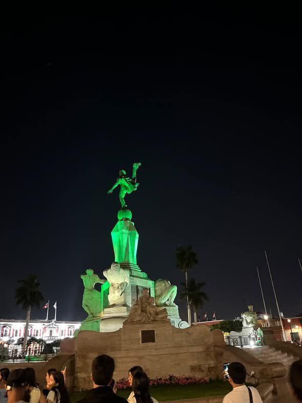
Al llegar a la Plaza de Armas pude conocer uno de los lugares más representativos de Trujillo y apreciar sus alrededores.
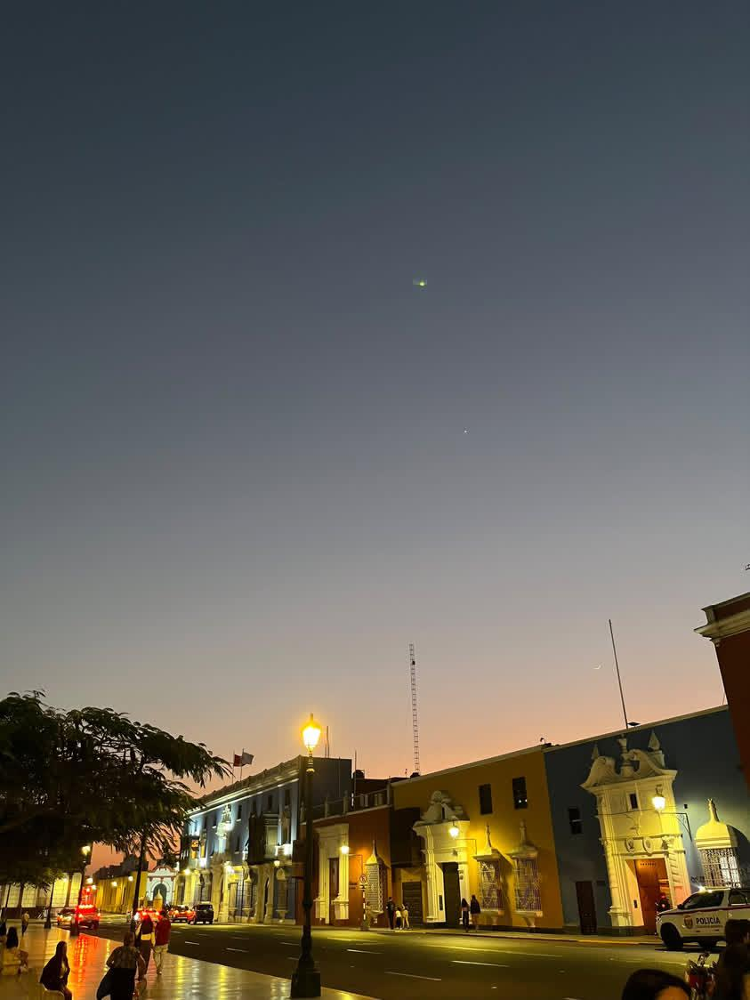
Me gustó recorrer la plaza y observar los edificios y monumentos que se encuentran alrededor de ella.
🛍 Mall Plaza Trujillo
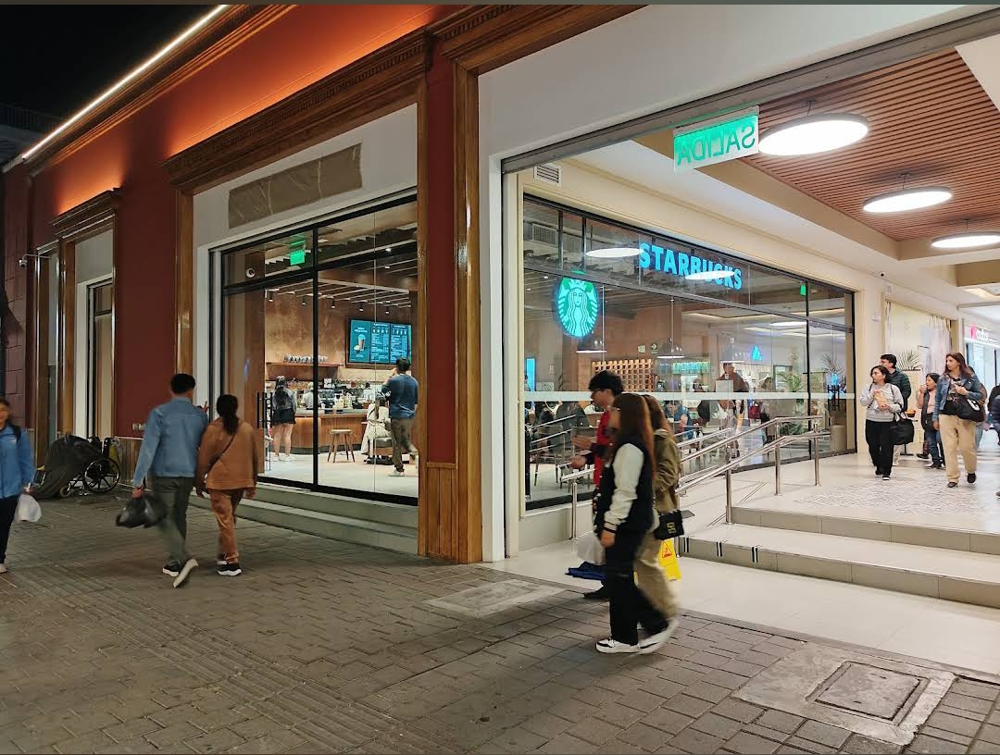
Durante nuestra visita al Mall Plaza Trujillo pudimos recorrer sus instalaciones y conocer sus diferentes tiendas y espacios.

Fue un lugar donde pudimos caminar, comprar algunas cosas y compartir un momento con mis compañeros.
🏨 Hotel

Regresamos al hotel para descansar después de las actividades que realizamos durante el día.

Pudimos descansar y prepararnos para continuar con las actividades programadas para nuestro viaje.
🏛 Museo de Sitio de Chan Chan

En el Museo de Sitio de Chan Chan pude conocer más sobre la cultura Chimú y observar objetos relacionados con su historia.
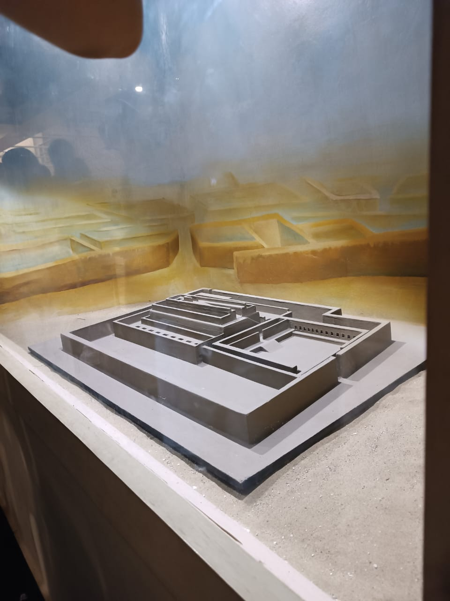
Durante la visita aprendí más sobre cómo se organizaba la sociedad Chimú y sobre algunas de sus costumbres.
🏜 Chan Chan
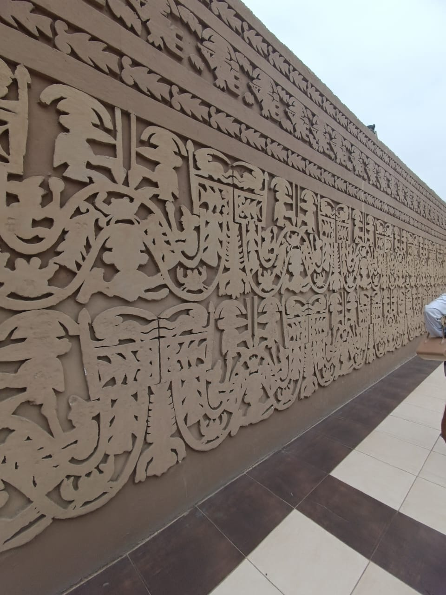
Al recorrer Chan Chan pude conocer parte de la antigua ciudad Chimú y observar sus grandes construcciones de adobe.
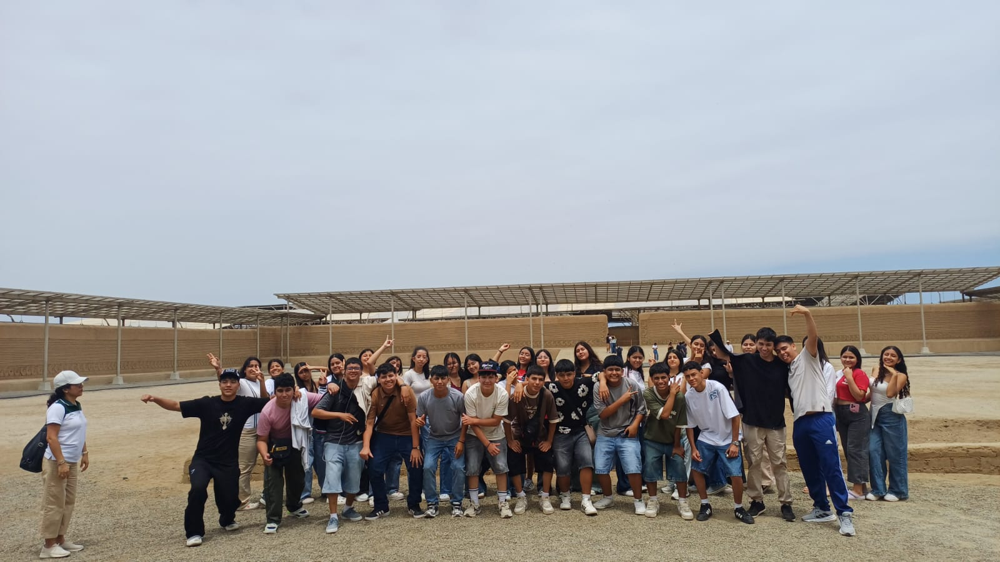
Me impresionó ver las grandes paredes de adobe y los diseños que todavía se conservan en este importante sitio arqueológico.
🌊 Playa de Huanchaco

Al llegar a Huanchaco pude disfrutar del paisaje de la costa y conocer más sobre la tradición de los caballitos de totora.

Me gustó visitar la playa, caminar por sus alrededores y disfrutar del paisaje antes de terminar nuestro recorrido.